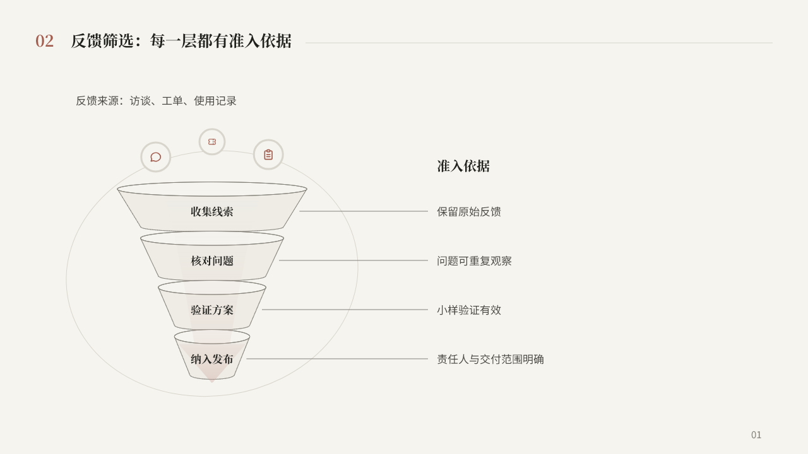
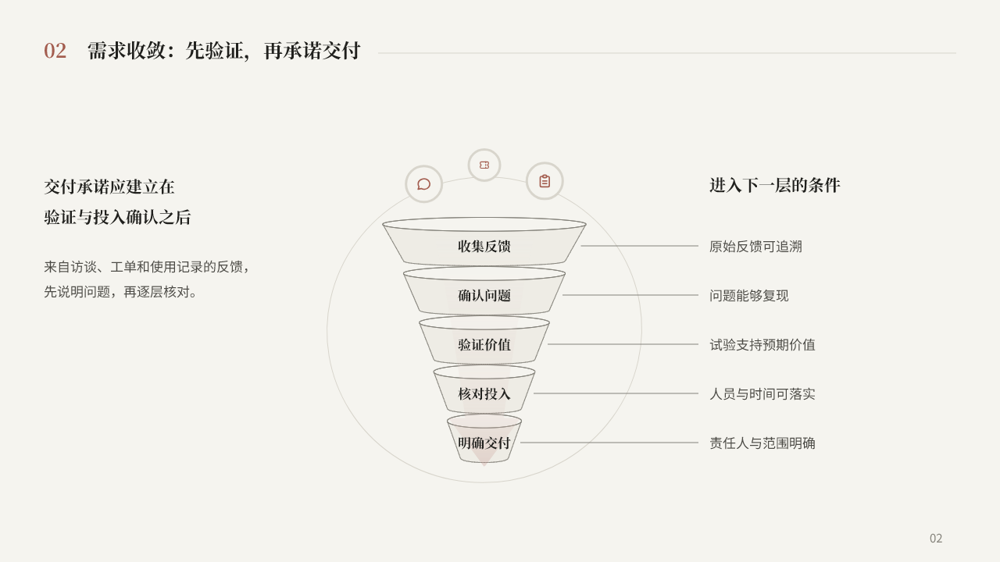
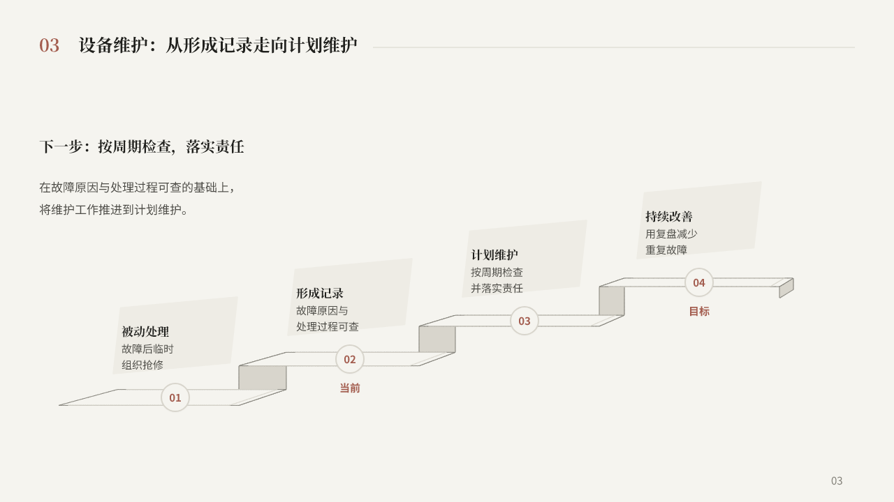
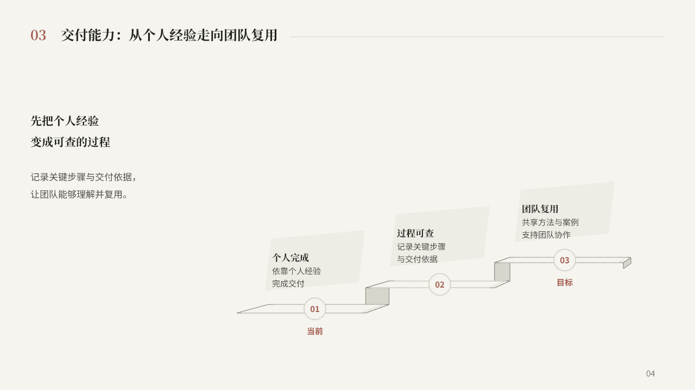

漏斗 · 四层与对应依据
布局先确定入口说明、左侧四层收敛、右侧四行依据。层级位置由页面行节奏决定，结构保持共同轴和渐窄轮廓。

4 个页面、8 份可编辑 PPTX。简洁版与结构版共用稿件、文字位置、字号与阶段／等级位置。修订经过 3 轮实际渲染复核。
已保存的 P1 基线：main cdcf6071。本轮继续试验两个关系型结构。
布局先确定入口说明、左侧四层收敛、右侧四行依据。层级位置由页面行节奏决定，结构保持共同轴和渐窄轮廓。

新编五层稿：页面左侧讲判断原则，中间用窄区域表达收敛，右侧逐行列准入条件。层数增多时仍使用既定行距与文字档位。

先确定上升阅读路线与左上行动主张。阶梯将同一组等级锚点连成有共同透视的形状，文本与状态不随图形拉伸。

新编三等级稿：左侧展开行动解释，右下安排三等级递进。结构服从右下区域与等级位置，保留可见的上升关系和透视。
